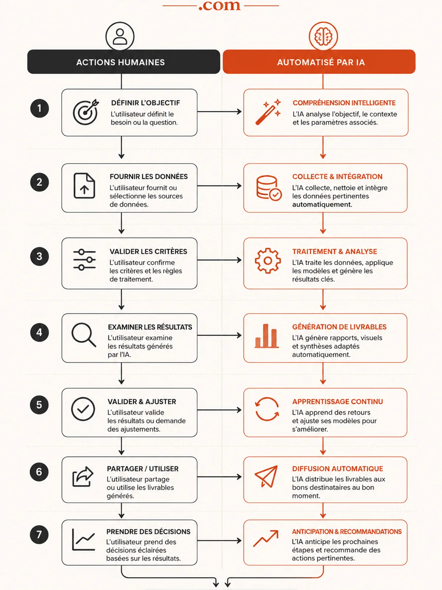
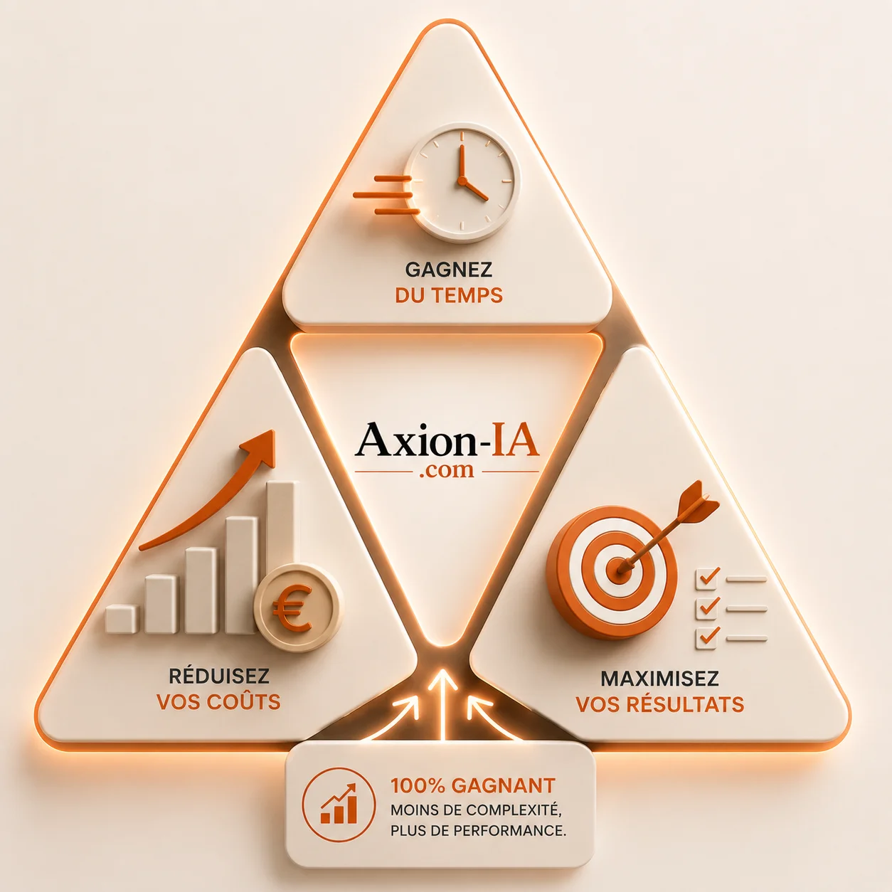
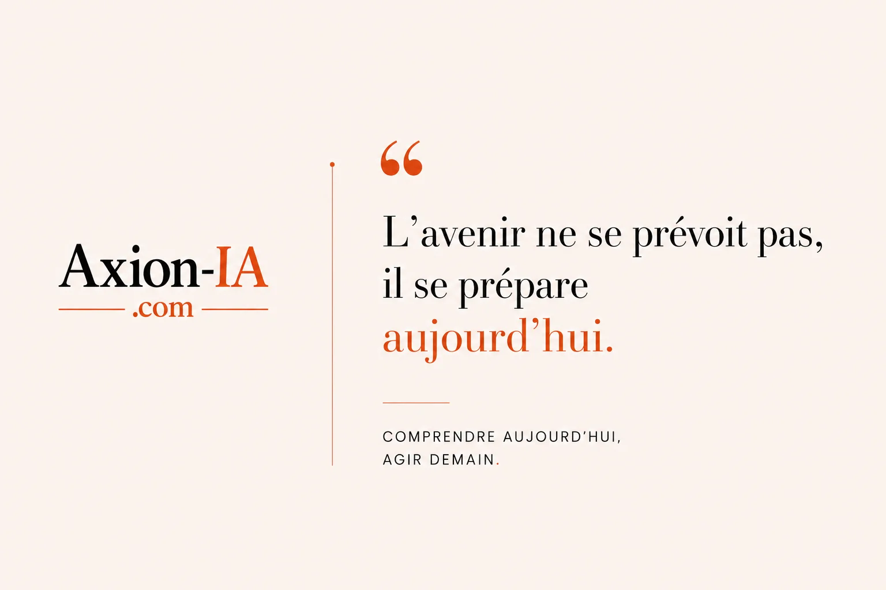
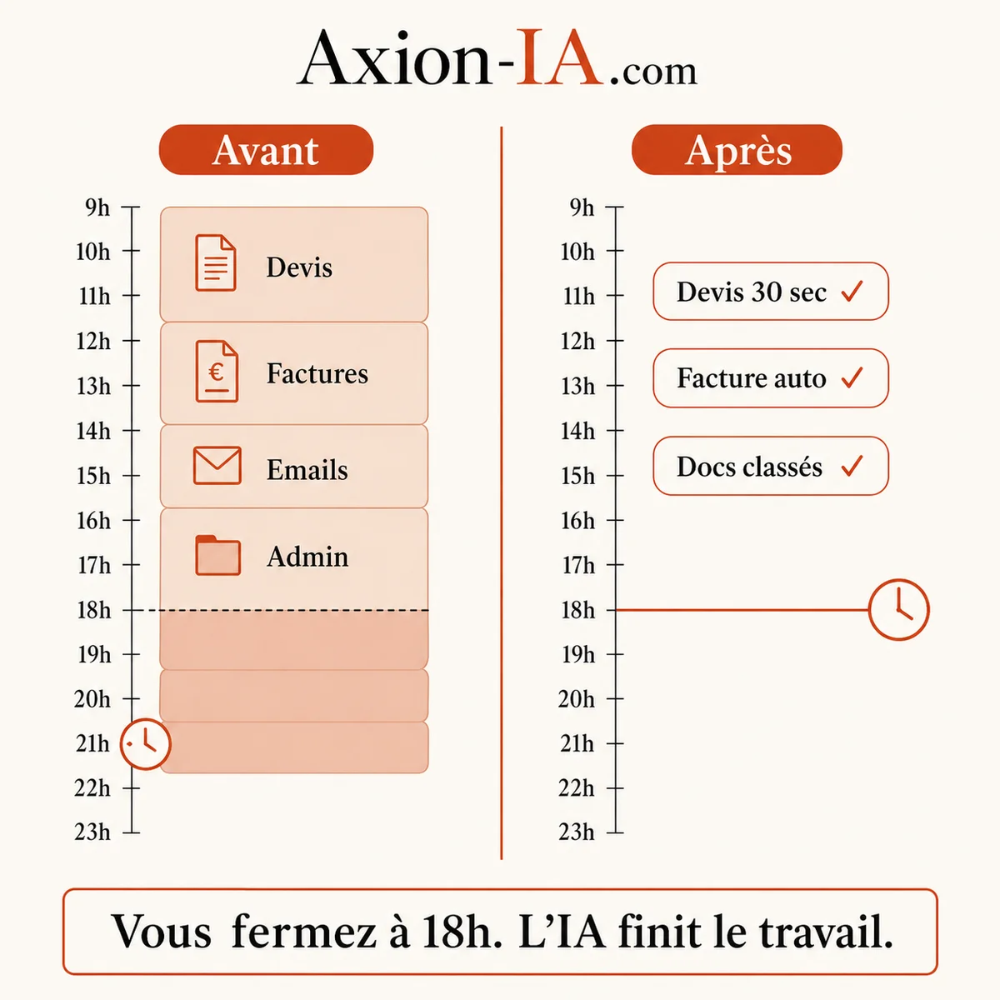

Analyse
Pourquoi tant de projets d’IA en PME s’arrêtent au premier essai
Les vraies causes d’un essai d’IA qui s’éteint, et ce qui distingue ceux qui durent.
Maquette v3 — page de catégorie du blog (/fr/blog/categorie/blog-implementations-ia) · document de travail, non publié
Les articles du blog consacrés à la mise en place concrète de l’IA dans une TPE ou une PME, partout en France : choisir les premières tâches à automatiser, rédiger les consignes, vérifier les résultats et faire durer l’usage. Du plus récent au plus ancien.
Articles
Le type de chaque article est indiqué sur sa carte.
Analyse
Les vraies causes d’un essai d’IA qui s’éteint, et ce qui distingue ceux qui durent.
Guide pratique
Six étapes concrètes, une consigne à copier et de quoi calculer le temps gagné.

Comparatif
Sept critères, deux profils et trois questions pour trancher chez vous.

Définition
Ce que recouvre le mot, à quoi il sert et ce qu’il ne fait pas.

Sélection
Dix tâches, choisies sur trois critères, avec pour chacune sa limite.

Étude de cas
Le récit, étape par étape, d’un essai mené dans une entreprise type : ce qui a bloqué et ce qui a tenu.
Catégories
Laissez votre adresse : le guide de l’IA pour les PME arrive par e-mail d’ici quelques minutes.
Questions fréquentes
Des articles sur la mise en place concrète de l’IA : quelles tâches confier en premier, comment rédiger la consigne, comment vérifier le résultat.
Chaque carte affiche sa date de mise à jour, et chaque article la rappelle en tête de page.
Trois façons de poursuivre, selon là où vous en êtes.